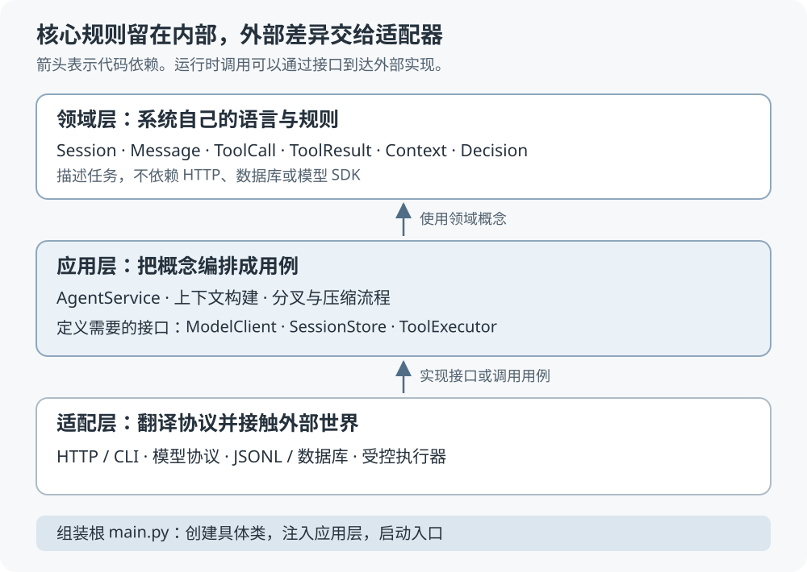
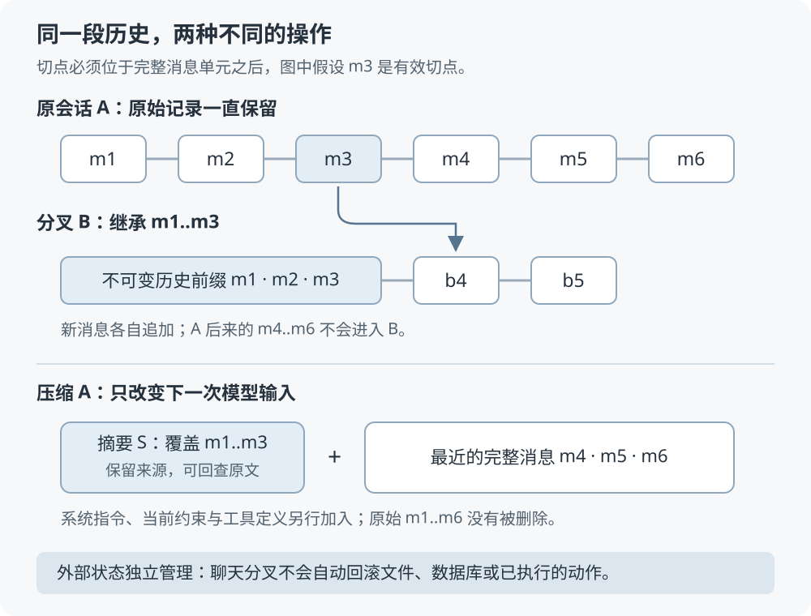

Agent 不只是一个循环：从分层架构到对话分叉与压缩
“Agent 就是一个循环。”
把上下文发给模型，模型要调用工具就执行，把结果塞回去，再问一次。直到模型回答完，或者循环次数用尽。只看这段逻辑，确实不复杂。
可一旦把它做成一个能持续使用的后端，问题马上就变了：模型协议换了怎么办？执行命令前谁来判断能不能做？进程在工具执行后崩溃，重启时会不会再执行一遍？用户从昨天的一条消息分叉，今天已经被改过的文件会跟着回去吗？
这些问题都不会因为 while 写得漂亮就消失。
工作流、三层设计和依赖倒置串得很清楚，最后留下了“分叉对话”和“对话压缩”两道作业。我很认同它从流程里找概念、再划分职责的思路。
下面沿用这条主线，再加上自己的工程推导。中断恢复、执行权限、分叉的数据语义、摘要的失效与验收方案，都是本文在视频基础上的扩展设计；案例中的任务和预算数字也都是为了说明机制而设定的，并非上线实测。
一、先让一个 Agent 跑起来，再看循环漏掉了什么
假设我们要做一个编程助手。用户说：
检查这个项目为什么测试失败，修复后再跑一遍。不要改部署配置，也不要删除已有文件。
最低限度的流程可以写成这样：
1 | 接收用户消息，加入会话 |
这是一个合理的起点。单用户、本地运行、只有几个只读工具时，用一个模块把链路跑通，能很快验证模型是否理解任务、工具是否好用。
我不觉得原型阶段就应该先堆一排抽象类。需要拆分的信号，是不同的变化开始挤在同一处。
比如最初使用一家模型服务，代码直接在循环里读取它的响应字段。后来换服务商，不只是调用地址变了，历史消息、工具定义、工具结果的格式都要跟着改。再想测“审核拒绝后会不会继续执行”，测试居然必须连接真实模型，结果还不稳定。
这时，真正的问题已经不是循环怎么写，而是：哪些规则属于我们的系统，哪些细节来自外部服务？如果这两种东西绑在一起，一次外部变化就会穿透整个流程。
视频从这里引出领域层、应用层和适配层。分层的价值，也要从这类变化里理解。
二、三层架构到底在隔离什么
领域层定义系统自己的语言。什么叫一次会话，什么叫工具调用，审核结果里必须有什么，这些都由我们决定。
应用层把这些概念编排成用例。用户发来一条消息，先保存还是先请求模型？工具被拒绝后如何反馈？什么时候继续，什么时候停止？这些属于流程。
适配层负责和外面的世界打交道。把模型服务的响应翻译成自己的消息，把会话写进文件或数据库，把 HTTP 请求翻译成应用层调用，把工具请求交给实际的执行环境。

图里表示的是代码依赖方向。运行时，当然可能是 AgentService 调用一个模型适配器；但应用层只认识 ModelClient 接口，不需要导入那个适配器的具体类。
视频把 SessionStore 和 ModelClient 接口放在应用层，道理就在这里：应用层先提出“我需要怎样的能力”，适配层再负责提供。接口放在哪个目录并没有唯一答案，关键是核心流程不要反过来依赖某一家 SDK。
可以用一个很直接的办法检查边界：
| 现在要改什么 | 主要应该影响哪里 | 如果改动扩散，先检查什么 |
|---|---|---|
| 工具被拒绝后，把拒绝原因反馈给模型 | 应用流程与领域结果类型 | 拒绝是不是被当成普通异常随手吞掉了 |
| JSONL 存储换成数据库 | 存储适配器、组装配置 | 应用层是不是直接拼文件路径或 SQL |
| 新增一个命令行入口 | 输入适配器、组装配置 | HTTP 的请求对象是不是传进了领域层 |
| 新接入一种模型协议 | 模型适配器、能力检查与配置 | 核心历史里是不是存满了厂商私有字段 |
这里有个容易被说过头的地方：分层并不保证任何新模型都只改一行。已有接口能表达的新实现，往往可以主要改组装配置；如果新能力改变了语义，比如流式事件、多模态内容、异步工具，就可能需要扩展接口。
好的抽象应该把这种差异暴露在清楚的位置，而不是假装所有模型都完全一样。
Assistant 和 Reviewer，是职责不同的两个角色
视频中，Assistant 根据会话构建回答用户所需的上下文，输出 AssistantMessage；ToolCallReviewer 构建审核某次工具调用的上下文，输出 Decision。
它们可以使用不同的指令、模型和预算，但这并不意味着必须引入两个独立服务，或者先搭一个复杂的多智能体平台。起步时，它们完全可以只是两个上下文构建器，加上两组模型配置。
Decision 也不该只剩一个布尔值。拒绝执行时，需要有模型和用户能理解的原因，应用层才能把它组织成对应的工具结果。
三、先分清历史、上下文和运行状态
后面两道作业能不能设计清楚，取决于这里有没有分开。
会话历史回答的是“发生过什么”：用户提出了什么要求，模型请求了哪个工具，工具实际返回了什么。上下文回答的是“这一次模型需要看到什么”：系统指令、工具定义、相关历史、摘要和必要证据。运行状态回答的是“系统正在做什么”：当前运行到了哪一步，哪些调用尚未完成，还有多少预算。
它们有交集，但不是同一个对象。
一个较长的历史，不必每次全部发给模型；一次工具执行超时，也不能直接把它从历史中抹掉，假装没有发生。用户只是关闭网页时，后端运行是否继续，更不能由聊天列表里最后一句话决定。
在本文的设计中，把它们整理成下面几种对象。后文接口代码只展示契约，不是一套已经实现的 Agent 框架。
| 对象 | 必须说清的内容 | 它解决的问题 |
|---|---|---|
Session |
会话 ID、有序消息、版本、可选的分叉来源 | 我们正在继续哪段对话 |
Message |
稳定 ID、消息类型、内容、来源 | 某个事实在历史中的位置 |
ToolCall |
调用 ID、工具名、参数 | 模型具体想做什么 |
ToolResult |
对应调用 ID、状态、内容或证据引用 | 那次调用到底得到了什么 |
Context |
指令、工具描述、本次选入的信息、预期输出类型 | 这次模型看见什么、应返回什么 |
Run |
运行 ID、状态、预算、当前步骤 | 一次用户请求执行到哪里 |
视频里最基础的消息有 UserMessage、AssistantMessage 和 ToolResult。其中 AssistantMessage 可以同时包含文本和多个 ToolCall，结果通过调用 ID 与请求配对。
这个配对不能省。假设模型同时请求读 package.json 和运行测试，返回的两段文本如果没有调用 ID，后面就很难分清哪段是文件内容，哪段是测试输出。出现并行执行或重试后，仅靠排列顺序更容易出错。
本文进一步给结果区分 succeeded、failed、denied 和 unknown。denied 表示确定没有获准执行；unknown 表示外部效果尚未查明，比如请求超时后不知道写入是否已经发生。把这两种情况混成“失败”，恢复时就可能作出错误决策。
还要区分工具的说明和实现。模型只需要看到名称、用途和参数约束，不需要拿到执行器、凭据或文件句柄。视频用一个带 execute 方法的 Tool 表达工具行为；如果后面需要远程执行、沙箱或独立授权，可以进一步拆成 ToolSpec 和 ToolExecutor。
拆分的依据是执行环境确实开始独立变化，不是对象越多就越专业。
预期输出类型，需要真正检查
视频用 Context[T] 表达“这次调用应该返回什么类型”，这个思路很实用。例如回答用户时期待 AssistantMessage，审核工具时期待 Decision。
不过 Python 类型注解不会自动把网络响应变成可信对象。适配器还得解析响应，检查必填字段和参数结构；应用层还得确认工具名存在、调用 ID 不冲突。
结构错误时，可以在限定次数内要求修正，也可以让这次运行明确失败。不能先把不合格结果写成已确认的工具请求，再指望后面碰巧能执行。
四、把循环当成一段会中断的流程
回到修复项目的案例，模型提出先读取配置，再运行测试。应用层至少要保证这样的顺序：
1 | 保存用户消息 |
这样安排，是因为每一个持久化点都可能成为重启后的恢复起点。
先执行工具、再补记“模型想调用它”，一旦中间崩溃，历史里就找不到执行原因。只在一整轮结束时统一保存，也可能把已经发生的工具效果全部漏掉。
视频提出消息产生时就持久化，适合作为基础。再向前走一步，就需要把“请求了调用”“开始执行”“执行结果确认”这些状态分开。一次运行的状态也应明确：运行中、等待用户授权，以及正常完成、预算耗尽、执行失败、已取消等终态。预算用完时结束这次运行，不等于这段会话以后不能继续。
最麻烦的中断点，是工具已经做完，但结果还没保存
假设工具已经修改了文件，进程在保存结果前退出。重启后只看见一条未完成的调用，直接再执行一遍可以吗？
读文件通常可以重新读。创建资源、追加内容、发起支付这类有副作用的操作，就不能这样处理。
一个执行记录可以用 (session_id, run_id, tool_call_id) 标识，并带上参数摘要。若外部服务支持幂等键，就把稳定的操作标识传下去，同一次操作重试时继续使用它。相同标识却带着不同参数，应当拒绝，而不是当成一次正常重试。
但本地多写一张执行表，并不能让任意外部命令获得“恰好执行一次”的保证。数据库提交和外部副作用之间仍然存在空隙。
如果工具既不能去重，也不能查询执行结果，崩溃后的合理状态就是 unknown。暂停后续写操作，先核对环境或交给用户处理。明确表达“不确定”，比再赌一次可靠。
这也是 AWS 在幂等 API 与安全重试的文章中强调请求标识和调用意图的原因。同一份参数，未必代表同一次操作；同一次操作的重试，需要有可识别的身份。
循环上限，只管住了一种失控
max_iterations 能防止主循环一直转，却管不住一个工具卡住十分钟，也管不住每次审核和压缩额外消耗的模型费用。
起步时，至少给整次运行设置截止时间和总调用预算，再给工具设置超时与输出上限。审核、修正格式、压缩上下文等附加调用，也要进入同一份预算。用户取消后，停止安排新动作；已经开始的外部操作能否取消，要按工具能力处理，不能只把界面改成“已停止”。
如果一个 AssistantMessage 中包含多个工具调用，先顺序处理就够了。确认调用之间没有数据依赖、写入冲突和顺序要求后，再考虑并行。没有收益证据时，不必为并行执行提前增加复杂度。
JSONL 很适合教学，但它不会自动解决并发
JSONL 的好处很直接：容易追加、容易检查、没有额外数据库服务。单进程教学版用它保存历史很合适。
可“追加了一行”不等于“这条数据已经可靠落盘”。写到一半崩溃怎么办、两个请求同时写怎么办，都需要约定。
本文的最小版本选择同一会话只允许一个活跃运行，其他请求排队或明确返回忙碌。历史追加带版本检查。需要跨进程处理时，再把占用运行、版本更新和消息追加放进有事务能力的存储设计中；不要在等待模型响应的几十秒里一直占着数据库事务。
五、工具审核要回答语义问题，执行器要管住实际能力
视频在执行工具前增加一个审核角色，检查模型提出的动作是否合理。对于我们的例子，它可以发现：“用户明确要求不要改部署配置，你现在却准备修改部署脚本。”
这层检查有价值，但我不会把它当成唯一的安全措施。
审核模型也会误判，也可能被仓库文件或工具输出中的恶意指令干扰。它说“允许”，只说明一次语义判断通过了；实际进程能访问什么文件、能不能联网、能不能读取凭据，仍然由执行环境决定。
比较清楚的处理顺序是：
1 | 校验工具名与参数结构 |
只读文件工具可以按策略直接执行，不必每次都多调一个审核模型。高风险动作则可能同时需要规则、审核与用户授权。默认怎么划分，应由产品允许它做什么决定。
“审核一下 Bash 命令”尤其容易让人产生错觉。对命令字符串做黑名单过滤，挡不住所有间接执行、脚本内部行为和路径绕过。允许的命令再普通，进程如果拿着整个宿主机的权限，破坏范围也不会自动变小。
真正需要落实的是执行身份、工作目录、文件系统与网络访问范围、环境变量、资源和时间限制。路径检查也要考虑符号链接，以及检查后到执行前资源发生变化的情况。能够用受控的文件读写或测试工具表达的动作，往往没有必要一开始就开放任意 Shell。
如果用户已经批准某次操作，批准记录应绑定具体参数、资源范围和必要的环境版本，并有有效期。参数换了、目标文件换了，就重新判断。聊天里一句“之前同意过”，或者摘要里一条“用户已经批准”，都不能替代这份记录。
审核拒绝后，应用层生成对应调用 ID 的 ToolResult(status="denied")，说明拒绝原因，再让模型调整方案。执行器没有被调用，才算真正拒绝了操作。只给用户显示一条警告，后台却照常执行，流程上仍然是错的。
六、多模型适配，最重要的是把差异说出来
视频用 ModelClient 封装模型调用，用 ModelSettings 表达模型和思考预算等配置，再交给不同适配器翻译。这能把大量请求格式差异挡在外围。
但字段名称能翻译，不代表能力也能一一对应。
某个模型不支持指定的结构化输出，适配器该怎么办？把“高思考深度”映射成另一个参数，效果就等价了吗？某种响应必须携带服务商的续接信息，下次请求时又该由谁保存？
我更倾向于给适配器一份能力声明，再在开始运行时检查必需能力：
1 | from dataclasses import dataclass |
应用只需要单个工具调用时，不必要求并行调用；确实依赖结构化审核结果时，缺失能力就应明确报错，或者采用事先设计并验证过的另一条路径。不能悄悄丢掉配置，再返回一个看起来成功的结果。
还需要保留协议要求的续接信息。它可以由适配层管理成带厂商和版本标识的不透明状态，核心流程负责持久化与交还，不必理解内部字段。切换协议时，要先确认这段历史能否转换；不能转换的私有状态，不应原样交给另一家服务。
分层给我们的，是一个检查兼容性的地方。它没有消除兼容性本身。
七、作业一：从历史消息分叉一段新对话
第一道作业，是从已有对话中的某条消息分出新会话，继承此前历史，之后各自继续。
看起来像复制列表，但真正的设计问题是：复制到哪、什么东西独立、什么东西没有跟着复制。
先把“从这条消息开始”说准确
假设历史如下：
1 | m1 用户：检查测试失败原因，不要修改部署配置，也不要删除已有文件 |
用户想在读完配置的位置，换一条排查思路。我们定义接口中的 through_message_id 表示“包含这个消息，截取到这里为止”。如果传 m3，新会话继承 m1..m3，不带上 m4..m6。
这是一条本文明确选择的接口语义。界面如果提供“编辑这条用户消息后重新生成”，则应在旧消息之前截断，再追加编辑后的新消息，不去修改原会话。
工具调用还带来了另一个约束：不能随便切在半个调用中间。
如果截在 m2，历史里就有调用 c1，却没有它的结果。直接把这个历史发给模型，可能违反目标协议，也可能诱使运行器重新执行历史调用。
所以基础版本只允许在没有未配对工具调用的位置分叉，例如 m3、m5 或不带工具调用的普通消息之后。其他位置明确返回“切点不完整”，由界面引导选择。以后真的要支持任意位置，再设计“放弃调用”或截断整组调用的规则，不能静默挪动用户选的切点。
这里把一次助手工具请求及其全部对应结果看成一个完整单元。多个调用的结果还没收齐时，同样不是稳定切点。
最小接口与数据归属
1 | def fork_session( |
request_id 用来识别同一次创建请求，防止前端超时重试后创建两个分支。服务端还要绑定调用者身份；相同请求标识带着不同切点时，返回冲突。
新会话记录 parent_session_id 和 fork_point_message_id，方便追溯来源。它有自己的会话 ID、版本、后续消息与运行状态，不继承原会话正在执行的 Run。
第一版可以直接复制历史前缀，时间和空间成本都与前缀长度成正比。消息内容必须按不可变值处理，或者进行真正的深拷贝，不能只复制外层列表，内部参数字典仍被两个分支共同修改。
本文允许不可变历史消息保留原来的 message_id 和 tool_call_id，它们指向同一段已发生的历史；会话内成员关系以 (session_id, message_id) 标识。分支后新增的消息另生成 ID，历史调用也不会被当成新任务重放。
如果存储模型要求每份副本使用新 ID，就同时保存来源 ID，并成组重映射工具调用与结果的关联。只改请求的调用 ID、忘了改结果里的引用，会制造一段无法解释的历史。
创建分支时，一次固定一个历史前缀
应用层的处理可以整理成六步：
- 校验调用者对源会话有读取权限、对新会话有创建权限。
- 读取一个固定版本的历史前缀，确认切点存在且工具关系完整。
- 创建新会话，保存来源和切点。
- 写入前缀快照，初始化新会话自己的版本与空闲状态。
- 检查可继承的摘要，只保留没有覆盖到切点之后的有效摘要。
- 原子提交新会话、快照和请求去重记录，再返回新 ID。
源会话后来追加了 m7，不影响刚才固定的前缀。源会话在运行也不必一律禁止分叉，但切点必须已经持久化且完整；无法提供一致前缀的简化存储，可以先限制运行结束后再分叉。
数据量不大时，复制比共享祖先链更容易实现和排错。等长对话、多分支的存储成本确实显著，再考虑不可变消息共享、父指针或写时复制。升级后要一起解决祖先访问权限、删除与垃圾回收、过长引用链的读取问题。
对话分叉不会把文件和外部系统一起倒回去
这是我觉得这道作业最值得深挖的地方。
假设原会话在 m6 之后已经升级依赖，用户却从 m3 分叉。新会话的聊天记录停在升级之前，工作目录中的文件仍然可能是升级之后的版本。
复制聊天列表，对文件没有任何回滚效果。
因此需要区分两种产品能力：
| 分叉能力 | 复制什么 | 后续执行前要确认什么 |
|---|---|---|
| 对话分叉 | 消息、来源和有效的上下文记录 | 现在绑定的工作区是什么，当前文件是什么状态 |
| 带环境快照的任务分叉 | 对话前缀，以及能恢复的工作区快照 | 快照是否完整，恢复到哪个独立执行环境 |
一个 Git 提交或 worktree 可以帮助隔离受版本管理的文件，却不一定包含未提交文件、未跟踪文件、数据库或外部服务状态。要承诺“从当时重新执行”，就必须写清快照覆盖范围。
本文的基础作业只做对话分叉。分支获得独立的工作区绑定信息，执行前重新读取当前环境；需要环境重现时，再增加显式快照能力。旧分支中的一次工具授权，也不会自动变成新分支中的执行许可。
八、作业二：让长对话变短，但还能找回被省略的信息
第二道作业，是把较早的对话总结成摘要，之后发给模型的内容变成“摘要加最近消息”，减少上下文长度。
最容易实现的版本，是生成摘要后直接覆盖旧消息。它也最容易把恢复能力一起做没了。
回头问一句“刚才失败的是哪条测试”，摘要里如果没记住，系统就没有依据可查。更麻烦的是，一段错误摘要经过后续多轮引用，会越来越像已经确认的事实。
所以本文选择：原始历史保留，压缩只改变本次上下文的构建方式。历史是记录，摘要是有损的派生材料。

什么时候压缩，先从预算算起
只按“超过二十条消息就压缩”，很难判断实际大小。一条测试日志可能比前二十轮聊天还长。按字符数估算也会有误差，不同模型和内容的分词方式不一样。
至少要把这些内容一起算进去：
1 | 固定指令与工具定义 |
工具定义、输出预算和协议开销都不能遗漏。优先使用模型适配器对应的计数方式；没有精确计数时，采用保守估算，并为误差留出空间。
比如一个假设模型有 32,000 token 窗口，预留输出 4,000，安全余量 2,000，那么本次输入最多计划使用 26,000。固定指令和工具定义占 6,000，历史与检索材料的空间就只剩 20,000。
这不是推荐所有模型都照抄的配置。真正需要固定的是预算关系，数字跟着模型、工具数量和任务变化。
触发压缩也应早于硬上限，因为生成摘要本身需要上下文和输出空间。历史已经超出摘要模型容量时，要按完整单元分块处理；单个超长工具结果可以转成保留原文的证据引用，不能只在主调用前临时赌一次。
压缩到哪里，要尊重工具调用的完整性
沿用前面的历史，若 m4 请求运行测试，m5 才给出日志，就不该只摘要到 m4，把 m5 单独留在尾部。
切分依据首先是完整单元，其次才是要保留多少最近内容。当前运行中尚未收齐结果的工具调用，始终留在未压缩部分。最新用户要求和正在推进的步骤，也应优先保留。
这会产生一个现实取舍：保留最近消息越多，连续性通常越容易维持，但能节省的输入越少。如果一个完整工具单元已经很大，就需要先处理工具输出的体积，不能靠任意截断凑出预算。
摘要里究竟应该留下什么
“把上面的对话总结一下”太宽泛了。编程助手至少需要保留目标、明确约束、已经作出的决定、未解决问题和证据位置。对不确定的信息，还要保留不确定性。
一个摘要记录可以采用这样的结构：
1 | { |
这里的序号是会话中固定的前缀位置，source_digest 用来校验摘要对应的原文。还可以记录摘要模型、生成时间、提示模板版本，方便追查是哪一版压缩策略引入了问题。
记录里没有“已经证明是依赖版本问题”，因为到 m5 只有失败日志，还没有完成验证。摘要把猜测变成事实，就会让后面的模型沿着错误前提继续。
对于“不要修改部署配置”这类硬约束，我会从带来源的明确用户要求中建立独立约束记录，原文保留、变更可追踪，不把它完全交给自由摘要。约束冲突时按新的明确指令与权限规则处理，不能凭摘要自行覆盖。
即便如此，摘要仍不能成为授权来源。工具权限、用户批准和执行状态要从服务端的真实记录读取。仓库文件中的恶意文字，也不能经过摘要后被提升成系统指令。上下文构建时需要保留材料的来源和信任边界。
谁负责生成，谁负责保存
可以把设计分成三个明确的职责：
CompactionPolicy根据预算与完整单元选择压缩范围。Summarizer为选定的历史前缀生成结构化摘要。ContextBuilder组合指令、约束、有效摘要、最近消息和必要证据。
它们不一定各自成为独立服务。基础版本在应用层安排流程、通过模型和存储接口完成工作就够了。
发布摘要前，需要校验结构、来源引用和覆盖范围。如果摘要不合格，保留原历史，不覆盖上一版有效记录。如果在预算内可以继续使用原始上下文，就明确使用它；否则返回“当前上下文预算不足”，等待缩小任务或采用已定义的分块策略。
压缩失败不能被伪装成成功，也不能以发出必然超限的请求作为默认处理。
生成摘要的过程中，用户可能又追加了消息。因此压缩开始时要固定前缀及其摘要，完成时检查这个前缀是否仍然一致、当前生效摘要版本是否发生冲突。尾部仅仅追加了新消息，不代表旧前缀摘要失效，新消息继续留在尾部即可。
同时不能让一个较早启动、较晚返回的压缩任务，把已经覆盖更长前缀的新摘要覆盖掉。摘要的启用需要版本条件，不能按“谁最后写入谁生效”处理。
被压掉的细节，必须还有路可查
用户接着问：“刚才失败的是哪条测试，原始错误是什么？”
如果摘要只写了“测试失败”，模型需要根据 evidence_refs 读取原消息或原始日志。读取接口仍要做权限检查，并受当前分支的历史范围限制；不能借一个旧引用，越过分叉切点读取另一条分支后来的信息。
长日志可以存为不可变工件，保存内容摘要、大小和定位信息，按需读取相关片段。只留下一个临时文件路径却随时清理文件，就不算保留了找回能力。
还要规定找回失败时怎么办：引用已失效或原文不可用，就明确说明证据缺失，不能用摘要补写一份“原始日志”。原始历史保留多久，也应和产品的数据保留政策一致；过期清理后，检索能力自然会受限。
多轮压缩同样会积累信息损失。如果每次只总结上一版摘要，最早漏掉的东西越来越难回来。可以保留摘要的来源链，并在必要时从原始历史重建；不能指望不断“摘要的摘要”始终保持原意。
Anthropic 的上下文工程文章也讨论了压缩的取舍：过度压缩可能丢失后续才显现价值的信息，需要用复杂轨迹评估保留与舍弃。对具体系统来说，缩短输入和保住任务所需证据，要一起验证。
九、两道作业放在一起，会出现一个更有意思的错误
假设原会话已经有 80 条消息，当前摘要覆盖了 m1..m60。用户从 m40 分叉。
如果直接把原会话的摘要复制过去，新分支虽然原始历史只到 m40，摘要却已经带着 m41..m60 的结论。
比如原分支在 m55 才确认要升级依赖，新分支一开始就“记住”了这个决定。这相当于从未来偷带了信息，分叉的语义已经被破坏。
因此，继承摘要至少要满足两个条件：覆盖范围不超过新分支切点，来源前缀也确实一致。可以继承覆盖到 m30 的有效摘要，再保留 m31..m40；没有合适摘要时，就从分支自己的原始前缀重新构建，或在预算允许时直接使用原文。
这也解释了为什么摘要需要明确的覆盖位置与来源标识。只有一段自然语言，就很难回答“它到底属于哪段历史”。
还有一件事不会因为重新摘要就解决：工作区依旧可能已经被原分支修改。历史范围、模型上下文和外部环境必须分别核对。
十、把两道作业做成一个能验收的小项目
前面已经给出了参考设计。真要动手，我会把范围控制成：单用户、同一会话单个活跃运行、非流式模型调用、不可变历史、顺序工具执行。先把数据语义做对，再增加并发与性能优化。
目录不需要复杂，大致按职责分开即可：
1 | agent/ |
作业一的交付与验收
实现 fork_session，支持包含指定消息的前缀复制，返回新会话；再允许在新会话中继续发送消息。把切点、ID、权限、环境范围和重复请求的语义写进接口说明。
先写下面这些行为用例，再实现逻辑：
| 输入或条件 | 应观察到的结果 |
|---|---|
从前例 m3 分叉 |
子会话只有 m1..m3，没有 m4..m6 |
| 子会话追加“先检查测试环境” | 原会话没有这条消息；原会话追加内容也不进入子会话 |
请求在只有调用、没有结果的 m2 分叉 |
返回明确的切点错误，不创建半成品会话 |
| 同一个请求标识重复提交相同参数 | 返回同一个子会话 ID；参数不同则冲突 |
| 源会话在复制期间追加新消息 | 子会话仍对应固定的历史前缀 |
| 原会话摘要覆盖到切点之后 | 不继承这份摘要，不能泄漏后续结论 |
| 原分支已经修改工作区文件 | 子会话不宣称文件已回滚，执行前重新核对绑定的环境 |
| 无源会话读取权限 | 拒绝创建，不泄露历史和来源内容 |
这组用例的重点是可观察行为。仅仅断言返回对象里多了一个 parent_id，证明不了两个分支真的独立。
作业二的交付与验收
实现预算计算、稳定切点选择、结构化摘要、摘要生效条件，以及按引用找回原文。原始消息保持不变，让测试直接检查“发给模型的内容”与“存储中的内容”两份结果。
| 输入或条件 | 应观察到的结果 |
|---|---|
| 总预算仍充足的短对话 | 不触发摘要调用，使用原始消息 |
| 长历史触发压缩 | 生成覆盖明确前缀的摘要，拼接完整尾部，存储原历史不变 |
| 切点落在一次工具请求与结果之间 | 选择合法完整边界，不留下孤立结果或悬空调用 |
| 原文含“不要修改部署配置” | 压缩后该约束仍有可验证来源，不被弱化为一般偏好 |
| 摘要遗漏原始报错，用户追问细节 | 通过证据引用读取原文；找不到则报告缺失 |
| 摘要生成超时或结构错误 | 不启用坏摘要，原历史和上一版有效摘要不受损 |
| 压缩时追加新消息 | 摘要只覆盖固定前缀，新增消息留在尾部且不重复 |
| 两个压缩任务乱序完成 | 旧任务不能覆盖更新的有效摘要 |
| 模型或工具定义改变了预算 | 重新计数，不沿用上一模型的可用窗口假设 |
| 摘要文字声称用户已批准一个写操作 | 执行器仍读取独立授权记录，不据此放行 |
用假的模型返回预设消息，用假的工具记录是否执行，可以稳定验证这些流程。真实模型主要用于评估摘要是否保留了后续任务真正需要的含义，两类检查各有用途。
再加一道联合作业：分叉一个已经被压缩的会话
准备一段带摘要的历史，让摘要覆盖到 m60，从 m40 分叉。分别验证：子会话不含未来信息；旧约束仍在；历史细节可以按权限找回；继续执行时不会重放复制来的工具调用。
然后故意在旧摘要里放入一个 m55 才出现的决定，看新分支会不会受它影响。这个反例比“正常分叉成功”更能检查两种机制有没有真的接上。
如何判断压缩值得做
压缩率高，只说明输入短了。它没有说明任务做得是否一样好。
可以固定一组长对话轨迹，在相同模型、工具与后续问题下，比较完整历史和压缩上下文的表现。问题至少覆盖明确约束、较早的事实、尚未证实的猜测、原始证据和任务下一步。能看到的指标包括：
- 后续任务完成情况，以及完成的判定依据。
- 约束违反数，占所有设有明确约束的测试任务的比例。
- 证据问题答对数，占全部证据问题的比例，同时检查引用是否真的支持答案。
- 主调用、摘要调用和补读证据的总费用与总延迟。
模型有随机性时，重复评估并报告波动；不把一条成功样本当成普遍结论。输入缓存、摘要生成费用和证据补读，也都可能改变成本判断。
如果压缩只减少了主调用 token，却让摘要和反复补读花得更多，就需要调整压缩频率和保留范围。若错误集中在旧约束，优先修复约束保存；若错误集中在日志细节，优先改善证据定位。不要把所有失败都归结为“摘要模型还不够强”。
十一、我会怎样选择第一版
只做一个短对话工具助手，单模型、简单存储和顺序执行就可能足够。三层边界可以先体现在模块和接口里，不必拆服务。没有长历史，就先不做自动压缩；分叉数量少，就直接复制前缀。
当外部协议开始频繁变化，适配器让变化集中；当任务开始跨多轮运行，稳定 ID、执行记录和恢复语义变得必要；当历史真的挤压上下文预算，再引入带来源和找回路径的压缩。
视频让我最想继续推导的，就是最后这两道作业。分叉逼着我们回答“历史与环境分别归谁”，压缩逼着我们回答“省略了什么、还能不能找回来”。这两件事说清楚，前面的架构才不只是几张类图。
动手时可以从前面的六条消息开始：先在 m3 创建一个独立分支，再为原会话生成一份覆盖到 m5 的摘要。检查这份摘要是否被错误带进分支，以及分支下一次执行会读取哪个工作区。能解释清这两个结果，比一开始支持多少模型更能检验设计是否成立。
参考资料
- Anthropic：Effective context engineering for AI agents。参考其关于压缩、有损信息与长程任务上下文管理的讨论。
- AWS Builders’ Library：Making retries safe with idempotent APIs。参考其关于请求身份、重复请求和副作用的讨论。